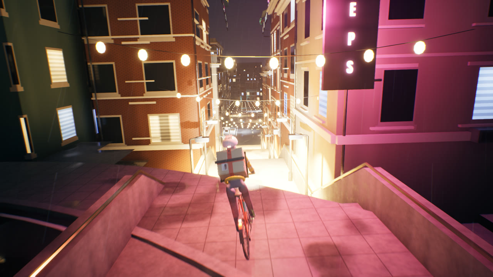
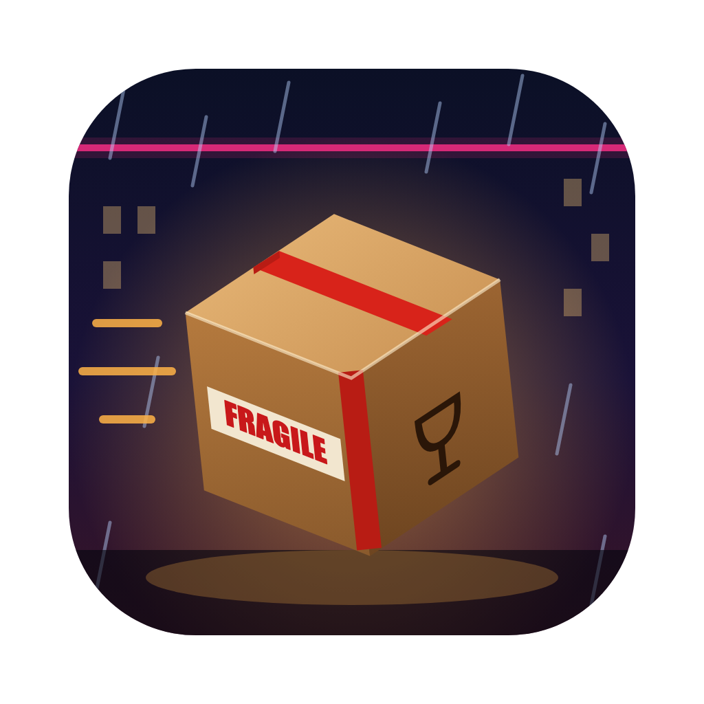
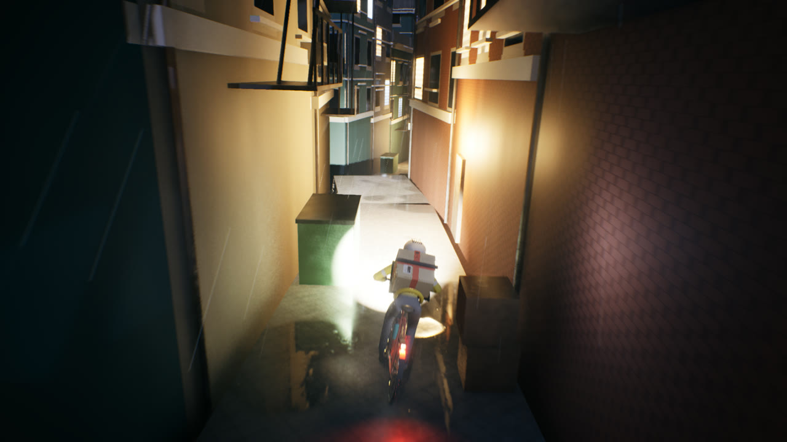
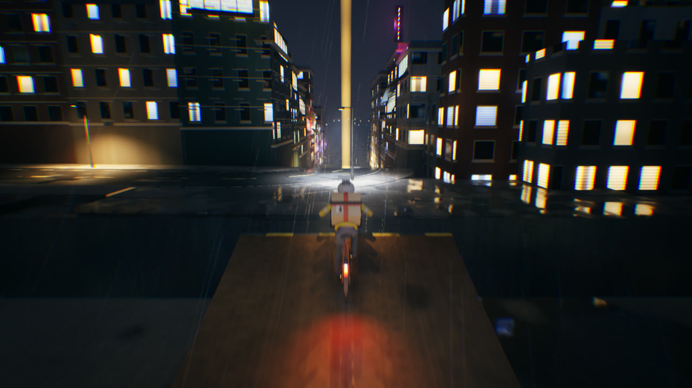
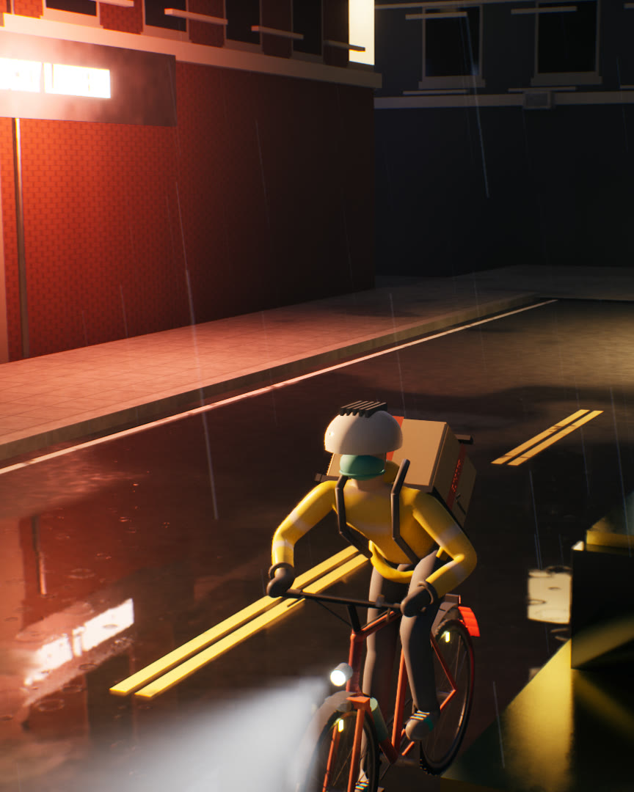

Lantern Steps
Four flights straight down between the hairpin's legs. Roll them and every step rattles the box. Hop a flight and you'd better brace before you land.
saves ~15 s
Midnight CourierA downhill delivery game · Unreal Engine 5
One package. Ridiculously fragile.
Two minutes to get it down the hill.
Free · keyboard or gamepad · Apple silicon Mac app or any modern browser
The hook
Pick up a box of antique glass at the Lucky Lantern on top of the hill. Drop it at the Hotel Marlowe on the harbour. You have two minutes, a bike with no suspension worth the name, and a whole rainy neighbourhood of stairs, kerbs and alleys between you and the door.
The tip pays for speed and for care: a dollar for every second to spare, times what's left of the package, plus a bonus if it arrives pristine. Shave twenty seconds off with the stairs and crack the box, and you'll earn less than the rider who took the long way round.
“Is this… glitter? It used to be a swan.”
Trailer
One neighbourhood, three gambles
The safe way down — Crown Street, the Kiln Road hairpin, Market Street, Lamp Hill, the bridge and Pier Lane — takes about a minute thirty-five. Three shortcuts cut it to about a minute. Each one costs you something.

Four flights straight down between the hairpin's legs. Roll them and every step rattles the box. Hop a flight and you'd better brace before you land.
saves ~15 s
A three-metre slot through the block with two short stair sets, dumpsters and a bend after every landing. Fast if you're clean, expensive if you're not.
saves ~6 s
A plank kicker on the quay and twelve metres of canal. Hit it at 40 km/h and you land on Pier Lane. Hit it at 35 and you swim.
saves ~12 sThe ride

Gallery
Controls
| W / RT | Pedal |
| S / LT | Brake |
| A D / left stick | Steer · in the air, W S tilt the bike |
| Space / A | Hold to brace, release to hop |
| Shift / X | Power slide |
| R / Y | Instant restart |
| Esc / Start | Pause and settings |